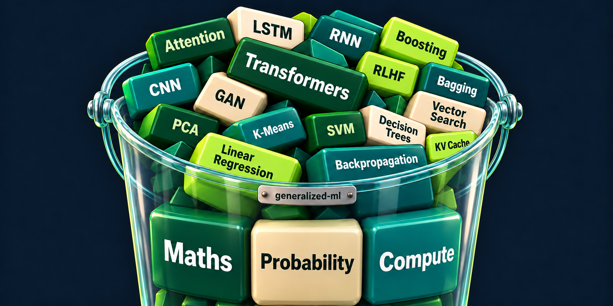

01 / FOUNDATIONSAI/ML learning repository
generalized-ml
Algorithms I’m learning, implemented from scratch and shared through practical notebooks. A growing resource for anyone learning AI, machine learning, deep learning, and agentic systems.
